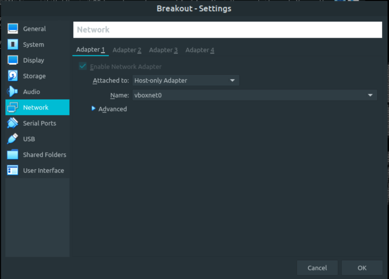
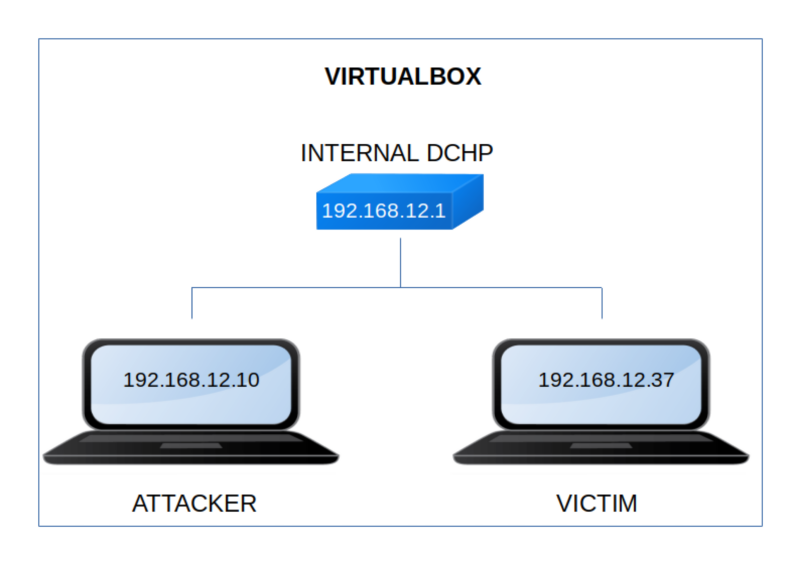

Empire: Breakout
▸ Empire: Breakout
▸ 1. Scan Network
▸ 2. Finding Services and Ports
▸ 3. Enumerate
▸ 3.1 Decode the message
▸ 3.2 Information about the system
▸ 3.3 Log into Webmin
▸ 4. Exploitation
▸ 4.1 Spawn a reverse shell
▸ 5. Privilege Escalation
▸ 5.1 Scan for files with capabilities
▸ 5.2 Netcat reverse connection
▸ 5.3 Log into the shell with password
▸ 5.4 Catch the flag
Difficulty: Medium.
Flag: 1 flag.
Learning:
• Reconnaissance
Scan Network
Find services
• Enumerate
Decode “Brainfuck to text”
Information about the system
Log into Webmin
• Exploitation
Spawn a rever shell
• Privilege Escalation
Scan files with capabilities
Netcat reverse connection
Log into the shell with password.
• Download (Mirror): https://download.vulnhub.com/empire/02-Breakout.zip
• Download (Torrent): https://download.vulnhub.com/empire/02-Breakout.zip.torrent
Install the machine on VirtualBox:
1. Download the file and extract it.
2. On Virtualbox choose File->Import Appliance.
3. Select the file “ova”.
4. Accept to import.


Watch your Machine IP.
$ ifconfig
Output:

Diagram
